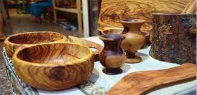
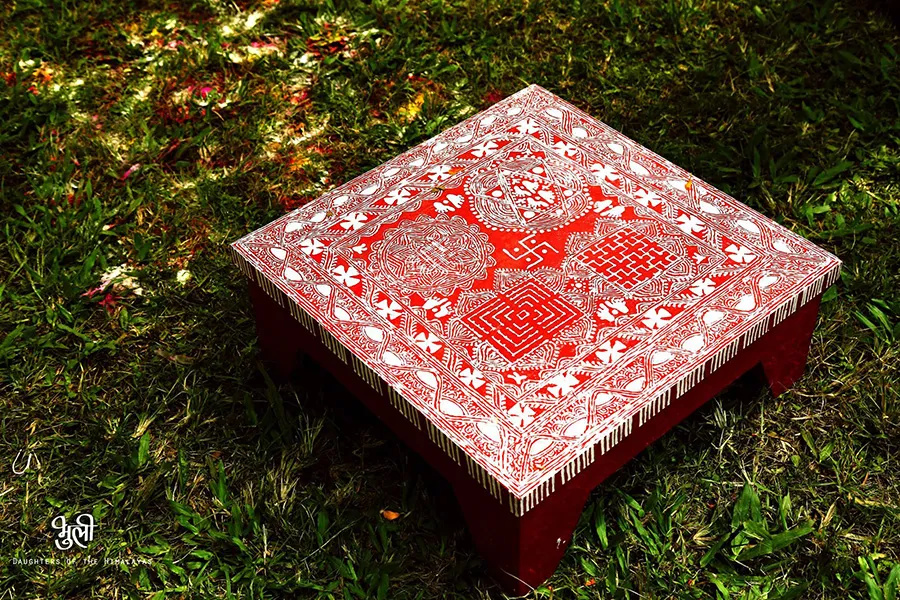
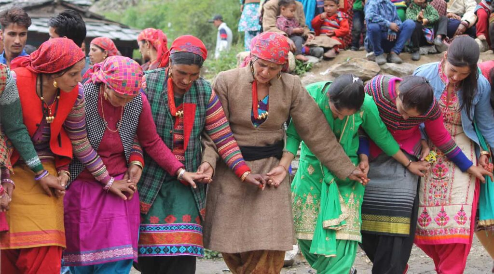
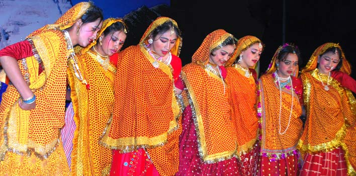
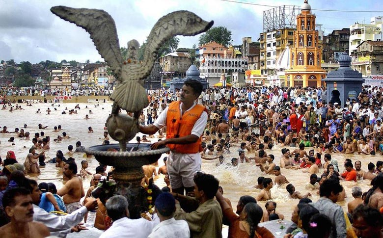
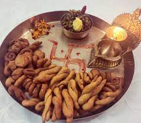
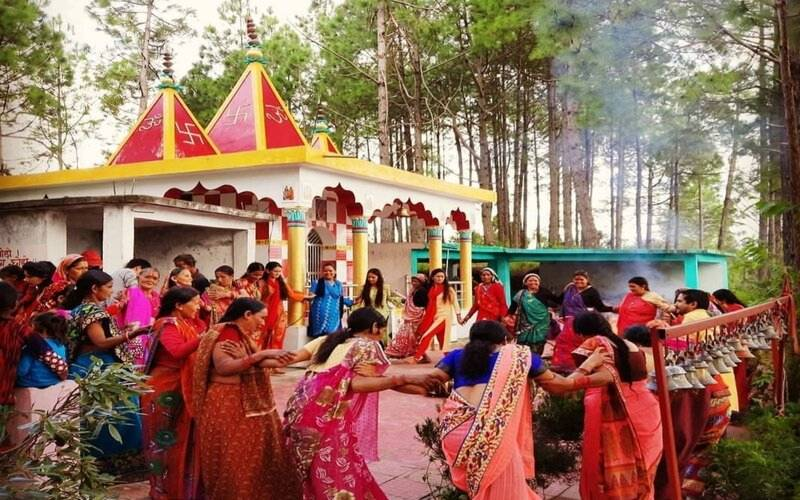

ART & CULTURE

WOODCRAFT
Wood carving is an art mastered by the craft-persons of Uttarakhand. The state is abundant in wood and wood products. The houses of the region have the carvings on their doors, windows and ceilings marvelously adorned in a simple and gorgeous style by the artisans. The open space of the windows is filled with specific latticework

AIPAN
Aipan is a ritualistic folk art, native to the Kumaon region of Uttarakhand. It is drawn to commemorate auspicious occasions, festivals and even rituals performed during death of a person. The art form is also known to offer protection against evil.

GARHWALI CULTURE
Garhwal is inhabited by people belonging to a number of ethnic groups and castes. These include Rajputs who are believed to belong to the Aryan origin, Brahmins who migrated after the Rajputs or later, tribals of Garhwal who stay in the Northern tracts and comprise of Jaunsaris, Jadhs, Marchas and Van Gujars.

KUMAONI CULTURE
Kumaon is one of the most Culturally rich region of not only of Uttarakhand but of India too. Weather its Tradition attire like Pichora or Dance forms like Chholiya or decorative art form like Aipan, Kumauni Culture is well know for its rich heritage, traditions and rituals.
HISTORY OF UTTRAKHAND
The 27th state of Republic of India, Devbhoomi Uttarakhand that was formed in the year 2000 after being separated from the large state of Uttar Pradesh, is a destination to explore the riches of Indian culture, history, and natural beauty. The state that borders Tibet to the north; Nepal to the east; the state of Uttar Pradesh to the south; and Himachal Pradesh to the west and north-west, is divided into regions, Garhwal and Kumaon, which further break into 13 districts. Earlier, the state was named Uttaranchal by Bhartiya Janta Party (BJP) led central government and Uttar Pradesh State Government when they started a fresh round of state reorganisation in 1998. However, in 2006, Union Cabinet of India to the agreed to the demands of the Uttaranchal Legislative Assembly and leading members of the Uttarakhand Statehood Movement and renamed Uttaranchal as Uttarakhand. The state also finds its mention in history as a part of the Kuru and the Panchal kingdoms (mahajanpads) during the Vedic age. In Hindu mythology also, Uttarakhand has been recognized as a part of the famed Kedarkhand (Now Garhwal) and Manaskhand (Kumaon). It is also believed the famous sage Vyas composed the epic of Mahabharata in Uttarakhand. The signs of the practise of Shaivism in ancient times along with Buddhism and Folk Shamanic religion was also found in the state. Famed for their simple lifestyle, honesty, and humility, the people of Uttarakhand reflect a sincere bond with nature and gods. Although, the state has a fair amount of cities that are plush with all state-of-the-art amenities and crowd from other parts of the country, however, this could not take the people of Uttarakhand away from their culture and traditional values. The culture of Uttarakhand still revolves around its traditional ethics, moral values, the simplicity of nature and a rich mythology. People are divided into regions and are thus better recognized as Kumaoni (Inhabitants of Kumaon Region) and Garhwali (Inhabitants of Garhwal Region).
Fair and Festivals



